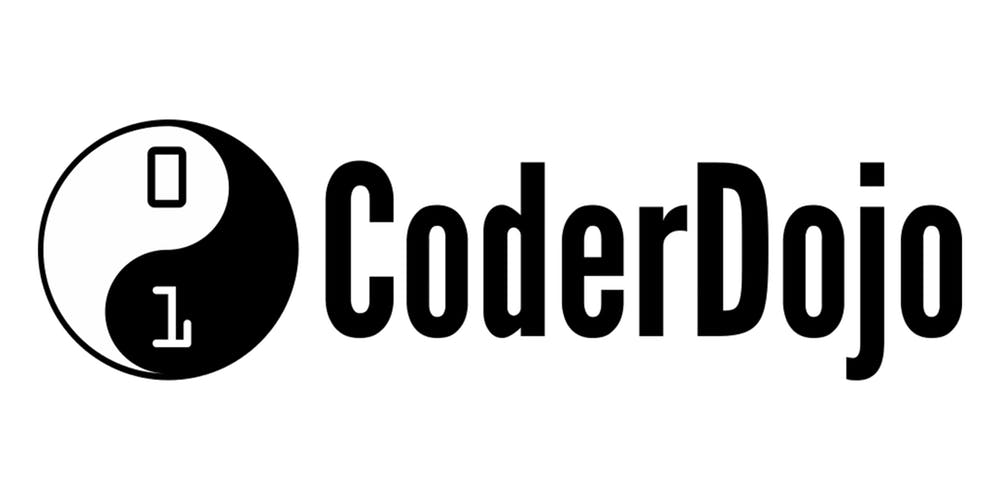

North Uist Coder Dojo at Claddach Kirkibost Code Club for young people (7 - 18) at Claddach Kirkibost Centre. Bring a laptop or borrow one of ours (in which case bring a pen drive to save your work!) Bring a parent or guardian if you're under 12 (Parents, we can help you learn some code skills too!) If you already have a code project to work on, great bring it along! We can also suggest projects to work on or help you get started. All abilities welcome. 5.30 - 7pm *Free* Event details on Coder Dojo website
